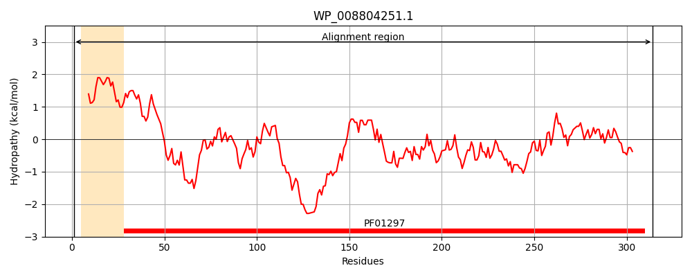
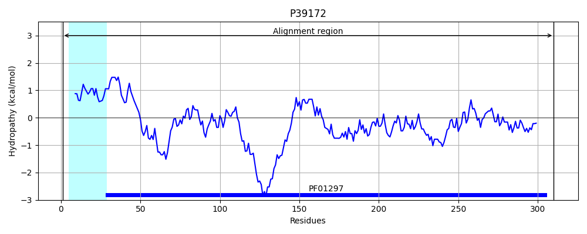
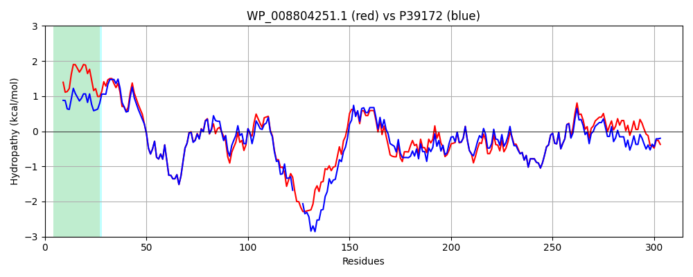

Hit Accession: P39172
Hit TCID: 3.A.1.15.5
Hit Description: gnl|BL_ORD_ID|10243 gnl|TC-DB|P39172|3.A.1.15.5 High-affinity zinc uptake system protein znuA precursor - Escherichia coli.
Mach Len: 314
e:0.000000
Query TMS Count : 1
Hit TMS Count: 1
TMS-Overlap Score: 1.200000
Predicted Substrates:CHEBI:10113;zinc(2+)
BLAST Alignment:
Score: 1244 , Bit scores: 483 bits, E-value: 5.2e-174, Alignment length: 314, Percentage identity: 77
Query: 1 MLHKNTLLCAGLGAVFLFAQVPLASAAVVTSMKPLGFIAAAIADGVTDTQVLLPDGASEHDYSLRPSDVKRLQNADLVVWIGPEMEAFMDRSTQSIAANKKVTIAELEGVKPLLMTGADDDDDHDGHDHGAAEKSDGDHHHGIYNMHLWLSPEIARLSAVAIHDKLLELMPQSRAKLDSNLQQFEAALAATDKQVSNELAPLKGKGYFVFHDAYGYFEKHYGLTSLGHFTVNPEIQPGAQRLHEIRTQLVEQKATCVFAEPQFRPAVIEAVARGTSVRMGTLDPLGTGITLGKASYPQFLTQLANQYSSCLKGD 314
MLHK TLL A L A A AAVV S+KP+GFIA+AIADGVT+T+VLLPDGASEHDYSLRPSDVKRLQNADLVVW+GPEMEAFM + + K+VTIA+LE VKPLLM DDD DH AEKSD DHHHG +NMHLWLSPEIAR +AVAIH KL+ELMPQSRAKLD+NL+ FEA LA+T+ QV NELAPLKGKGYFVFHDAYGYFEK +GLT LGHFTVNPEIQPGAQRLHEIRTQLVEQKATCVFAEPQFRPAV+E+VARGTSVRMGTLDPLGT I LGK SY +FL+QLANQY+SCLKGD
Sbjct: 1 MLHKKTLLFAALSAALWGGATQAADAAVVASLKPVGFIASAIADGVTETEVLLPDGASEHDYSLRPSDVKRLQNADLVVWVGPEMEAFMQKPVSKLPGAKQVTIAQLEDVKPLLMKSIHGDDD----DHDHAEKSDEDHHHGDFNMHLWLSPEIARATAVAIHGKLVELMPQSRAKLDANLKDFEAQLASTETQVGNELAPLKGKGYFVFHDAYGYFEKQFGLTPLGHFTVNPEIQPGAQRLHEIRTQLVEQKATCVFAEPQFRPAVVESVARGTSVRMGTLDPLGTNIKLGKTSYSEFLSQLANQYASCLKGD 310 | Protein Hydropathy Plots: |
|---|
|  |  |
Pairwise Alignment-Hydropathy Plot:
|
|---|
|  |